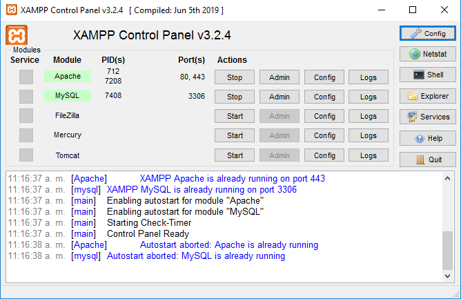
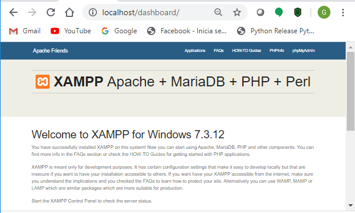
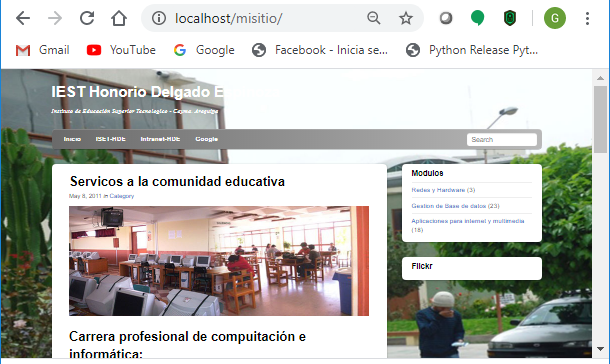
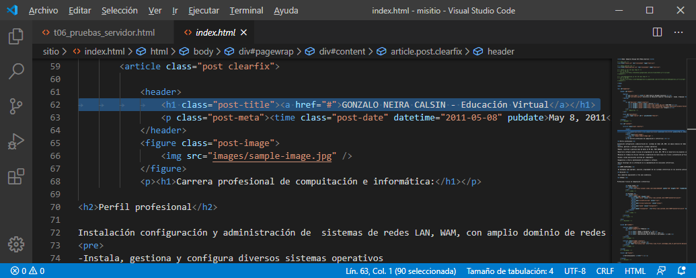

Prueba 1. de Servidor Web "Apache" (local)
Prueba 2. de Gestor de base de Datos "MySQL"
Activar los servidores desde XAMPP

Prueba 3. de Servidor local en el Navegador
Escribir: localhoost

Prueba 4. de Servidor local con "misitio"
Escribir: localhoost/misitio/

Prueba 5. de Servidor local modificando con VSCode
Modificar linea 62: Escribir "Apellidos y Nombres"
Escribir: localhost/misitio/
